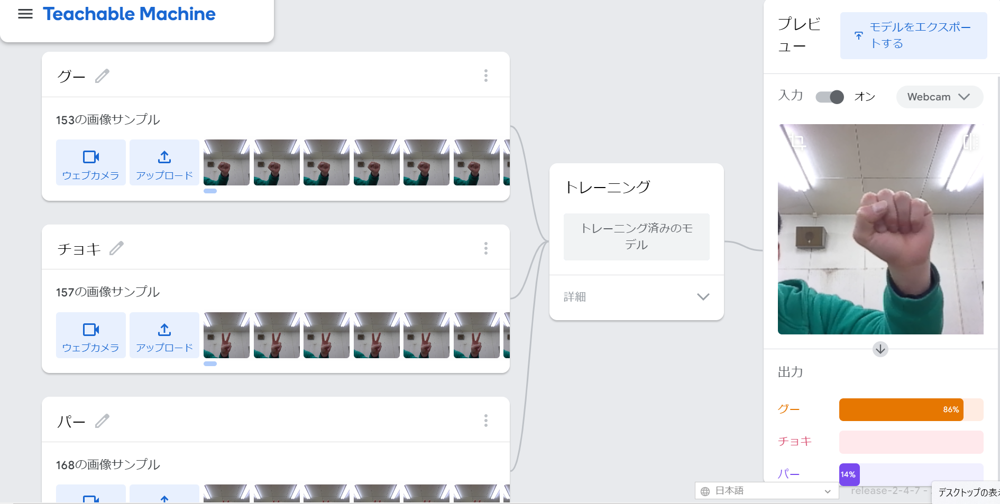
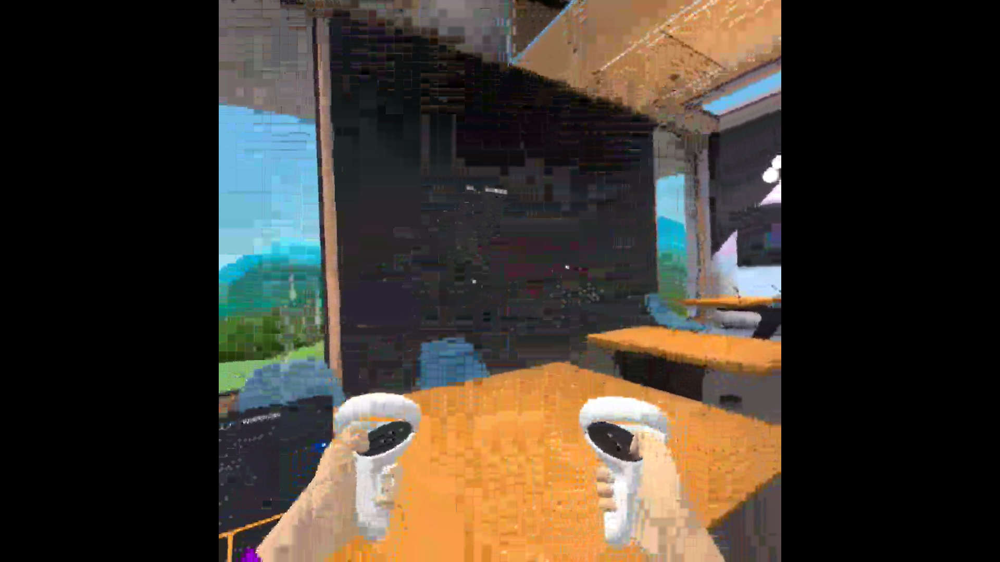

第2週目
2-1 １週目のレポートをHTMLで作る
１週目のレポート
1.内容
１週目のレポートをHTMLで作成した。画像ファイルなども付けた。
2.感想
編集の仕方を忘れたりして大変だった。画像の変え方が分からずかなり困ったが検索などで分かった。
2-2 機械学習体験

1.内容
じゃんけんの手の形を覚えさせて確認した。
2.感想
じゃんけんの手の形を覚えさせたが自分の顔の位置や体の位置によって結果が変わっていたので少し面倒だった。私の顔はグーらしい。触角が生えていたらチョキなのか、顔が大きい人はパーなのかと疑問に思った。仕組みを理解すると色々な遊び方ができそうでわくわくした。
2-3 VR（バーチャルリアリティー：Virtual Reality）会議室の体験

1.内容
VRを用いてバーチャル空間内でクラスメイトと交流
感想
今回の授業で行ったVRでは文字を書いて見せるだけしかできないと思っていたが、続けているとパンチしたり色々できてとても面白かった。
VRで授業するのはありえないと思っていたが案外良いかもしれないと思った。でも、初めてのVRで目が疲れたりして、外した後に少し酔ってしまった。